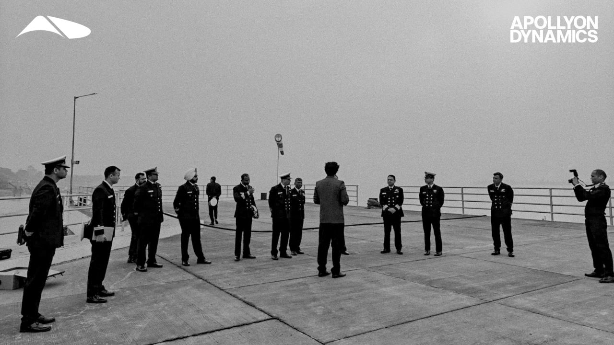
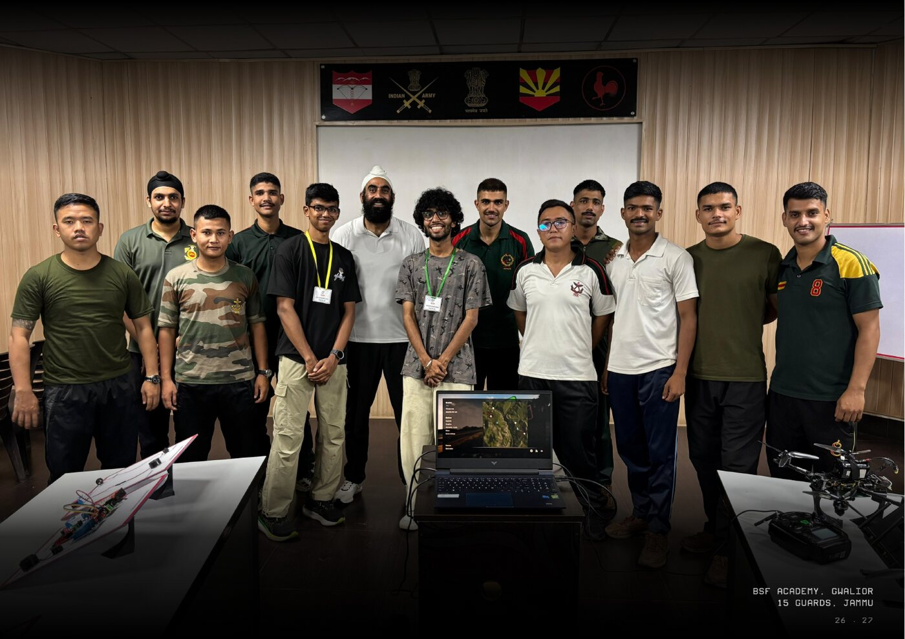

Apollyon Dynamics

Apollyon Dynamics builds autonomous strike and interception systems for India: a family of jet-powered effectors, a high-speed interceptor and an unmanned surface vessel, with a long-range cruise missile in concept. They share one engineering method, are designed for the industrial base India already has, and are priced to be used in the numbers a long conflict consumes.
How we started
Apollyon Dynamics started in May 2025 at BITS Pilani, Hyderabad. While the two founders were still undergraduates, they built their first tactical quadcopter in their hostel rooms using 3D printers.
The first drones were designed and built in-house. The team took them to Chandigarh for flight trials with the Indian Army, where their flight performance and resistance to jamming helped secure the company's first order. That order came from 15 Guards and was worth ₹2.68 lakh. Within two months of incorporation, Apollyon had delivered its first production hardware to a forward unit.
More orders and deployments followed across Jammu, Udhampur, Chandimandir and Arunachal Pradesh. Working with Army units from the beginning gave the team a chance to test its designs in the field, understand what soldiers actually needed, and use that feedback in subsequent builds. Alongside tactical airframes, Apollyon built and delivered a containerised Mobile Drone Lab to the Army with 15 Guards in Jammu, bringing diagnostic, calibration and mission-programming equipment to the forward base. The people behind the programmes →
Precision is mercy
A defence company should be comfortable with the fact that its products are lethal weapons. They are built to destroy military capability. A system that cannot do this reliably is a weak instrument of deterrence. Lethality, therefore, matters in the most literal sense. Apollyon intends to build highly lethal weapons, making it prohibitively costly to wage war against India.
The ethical question begins after accepting that fact: how should destructive force be designed and employed by a state that claims restraint as a virtue? Our answer is contained in one of the company's simplest yet defining phrases: Precision is Mercy. Precision in striking a legitimate military target is an act of mercy toward the civilian population. Destructive capacity by itself is a poor measure of military quality; the higher standard is discriminate force: the ability to produce the required military effect against the intended target while minimising incidental harm, unnecessary destruction and risk to those who are not direct part of the conflict.
Lethality and precision therefore belong together. Lethality provides certainty of military effect; precision confines that effect to where it is intended. The desired weapon is one that maximises the probability of achieving the legitimate military objective while minimising consequences beyond it. This certainty is what upholds unassailable deterrence.
क्षमा शोभती उस भुजंग को, जिसके पास गरल हो
उसको क्या जो दंतहीन, विषरहित, विनीत, सरल हो। Ramdhari Singh 'Dinkar'
Restraint has value only when a state possesses alternatives. A country that cannot impose costs upon the aggressor can maintain peace only as an act of mercy of the aggressor. Only a country with overwhelming military power can choose not to escalate. In a democratic and plural state, the purpose of military power is neither conquest nor violence as an expression of national will. Its purpose is to make coercion unprofitable, to protect political independence, and to give the state enough freedom of action that diplomacy, restraint and peaceful settlement remain genuine choices rather than being necessitated by weakness.
Precision is Mercy
Lethality and precision belong together. Force without precision is barbarism; restraint without lethality is impotence. Discrimination confines destruction to legitimate military targets, protecting non-combatants and making aggression prohibitively costly.
The New Arsenal
An arsenal is an industrial state. The decisive weapon in long wars is not the peacetime stockpile, but the factory floor that replenishes it. Sovereign strategic autonomy requires domestic manufacturing depth, software independence, and institutional accumulation.
The Missing Middle
India is not missing technology. It is missing an industrial tempo. Between exquisite strategic weapons and mature ordnance commodities sits the unbuilt layer: high-tech, software-defined, attritable mass iterated in weeks and built at high rate.
What has changed in modern warfare
Cheap drones, better sensors, electronic warfare and mass production have changed how wars are fought. A military now needs not only capable weapons, but enough of them to sustain a long conflict.
The important change is not that expensive weapons are becoming obsolete. It is that they can no longer do everything. A cheap drone can force an expensive response, while a small number of sophisticated weapons cannot deal with every threat. Modern armies need both: advanced systems for difficult targets and cheaper systems that can be built and used in large numbers. Apart from this, all the conventional ways of navigation are becoming increasingly unreliable, as satellite navigation and communications are commonly disrupted in light of conflict.
The goal is simple: build weapons that work effectively and decisively in these conditions, can be produced in sufficient numbers, and are affordable enough to use when needed.
Eight decades of strategic dependency (1947–2026)
Military equipment is bought with the expectation that it will work when needed. But its effectiveness depends on much more than the equipment itself. Spare parts, ammunition, maintenance, software and technical support must all remain available throughout a conflict.
Dependence on foreign suppliers puts this battle-readiness completely outside a country's control. An aircraft may be perfectly capable to fly, but without the parts or weapons it needs, it cannot perform its intended role. What appears to be a complete military capability in peacetime can become unavailable precisely when it is needed most.
The following timeline shows how dependence on foreign suppliers has repeatedly jeopardized the sovereignty and effectiveness of Indian military action since independence.
Taken from primary documentation like declassified diplomatic cables and Standing Committee on Defence parliamentary reports. Read the full record here.
India's defence market turned inward
India has structurally redirected its defence procurement toward domestic manufacturing. Between FY14 and FY26, domestic defence output expanded 4-fold to ₹1.78 lakh crore, while military exports increased 56-fold to ₹38,424 crore. Statutory procurement mandates now guarantee domestic volume for aerospace and missile manufacturing.
Production, FY21–FY26. Source: Ministry of Defence / PIB releases.
Exports, FY14–FY26. Source: Ministry of Defence / PIB releases.
- Statutory capital reservation. The Ministry of Defence reserves 75% of its capital procurement budget—amounting to ₹1.39 lakh crore in FY27—for domestic manufacturers. Positive Indigenisation Lists embargo 5,521 imported subsystems and items, while updated procurement procedures dissolved historical public monopolies in tactical missile fabrication.
- Sustained attrition requirements. Active operational deployments across the Himalayan Line of Actual Control, the Line of Control, and maritime sea lanes consume ordnance faster than overseas supply lines can replenish. High-intensity multi-front operations require high-rate domestic production lines rather than fixed stocks of imported munitions.
- Independent export demand & geopolitical asymmetry. Many countries face high costs and restrictions when buying foreign defence equipment. India offers an alternative, and Apollyon has an additional advantage through its partnership with Tonbo Imaging. Tonbo's existing international customers, industry relationships and export experience give Apollyon a starting point in markets it would otherwise have to enter on its own. The market, and who can buy →
Strike per rupee
The measure Apollyon optimises is the price of delivered effect: what India pays for each kilogram of warhead carried each kilometre. Today's effectors, interceptors and cruise missiles are the first platforms built against that measure, and each generation is meant to push it lower.
The unit we count in
Comparing weapons by unit price or range alone obscures delivered effect. A commander buys warhead mass delivered across distance. Combining payload and range yields total delivered strike work:
Normalizes tactical loitering munitions and heavy cruise missiles onto a single capital-efficiency axis.
Two rules qualify this metric: the airframe must clear electronic-warfare and autonomous terminal accuracy gates, and survivability assumes subsonic terrain masking and route planning.
What a rupee buys
Divide a round's price by its envelope and you have the price of delivered effect. A Nightshade Mk II carries 15 kg over 300 km for a planning price near ₹1.5 crore, which works out to about ₹3,333 for every kilogram-kilometre. Hemlock is specified at 450 kg over 1,500 km for roughly ₹4 crore, or about ₹59. Between the two, the envelope grows by 150 times while the price of each kilogram-kilometre falls by more than 50 times.
Why the curve falls
Every platform in the family is built on the same reusable engineering base: the development and flight-test method, calibrated models, the autopilot and navigation software baseline, electronic-warfare hardening, seeker integration, qualification evidence, and a supplier base built for Indian production. A new airframe is still real engineering — aerodynamics, structure, propulsion, launch and payload integration — but it starts from models, software and test evidence that have already flown, so effort goes into what is genuinely new instead of repeating what is proven. Hemlock carries that base onto a new airframe and its own guidance implementation.
This is where legacy cruise missile costs come from: proprietary radar altimeters, hand-tuned optical correlators, military-specification inertial platforms, and a decade of qualification spent on each of them. The family leaves that hardware behind. Software on automotive-grade processors does the same work, and the structures are designed for India's composite and stamped-metal base. The full arithmetic, and the salvo model that follows from it →
Speed as a performance parameter
Development speed needs to be built into the engineering system itself, not treated as a temporary advantage of being small. At Apollyon, engineering compounds across programmes: each project leaves behind calibrated physical models, test rigs, qualification data, and qualified suppliers that the next programme builds on. More capable platforms still require new engineering, but that effort is focused on what is truly novel, allowing new airframes to be integrated and flight-tested much faster.
The core engineering challenge
High-speed autonomous flight breaks standard aerospace assumptions across four physical regimes:
| Bottleneck | The Physical Barrier | Apollyon Architectural Solution |
|---|---|---|
| 01 · Coupling Recertification trap |
Changing airframe geometry or engines traditionally forces multi-year recertification of navigation filters and control laws. | Reusable engineering core: Aerodynamics and mass properties load from calibrated tables at boot. Within a family, adapting to a new airframe requires parameter identification rather than firmware rewrites; each new programme inherits proven methods and test evidence. |
| 02 · Saturated Boundary Non-linear limit |
At 900–1,440 km/h, control surfaces approach mechanical deflection limits under severe cross-axis coupling, causing classical PID loops to degrade. | Hybrid synthesis: Classical stability margins across the nominal envelope, paired with gain-scheduled and envelope-limiting control laws identified from flight testing. |
| 03 · Latency as Geometry Compute as distance |
At high closing velocity, even small delays in sensor processing or bus communication produce significant miss distance. | Two compute domains: The flight-critical loop runs on a deterministic autopilot baseline; vision and perception workloads run on a separate mission computer and never interrupt flight control. |
| 04 · The Reality Gap Simulation limits |
High-altitude mountain turbulence, transonic buffet, and active EW cannot be modeled accurately from CAD or textbook CFD alone. | Empirical telemetry loop: Flight logs are fed back into our 6-DOF simulation models within hours, systematically refining aerodynamic tables and control tuning across platforms. |
The shared architecture, in full — the machine, the twin, and the loop →
Products and programmes
Three platform classes, four products, one engineering method that compounds. Three products are in active development — Nightshade, Ahuti and Piranha — and the fourth, the Hemlock cruise missile, is in its concept phase.
| Class | Problem it answers | Systems | Status |
|---|---|---|---|
| A · Long-range strike | Deliver precise, survivable effect at operational and strategic depth in salvo quantities a real campaign consumes. | Nightshade family (Target Drone (Economical / Premium) / Loitering Munition Mk II), Hemlock | Nightshade Mk I flown · target drones Q4 2026 · Mk II loitering munition Q1 2027 · Hemlock in concept |
| B · Air defence / cUAS | Deny hostile reconnaissance drones and loitering munitions a hard kill at a cost that makes firing the round rational. | Ahuti family | Ahuti Mk II flying · record holder |
| C · Maritime | Coastal reconnaissance and one-way strike from one small, sensor-equipped hull. | Piranha USV | Hull and hardware in development |
One turbojet airframe in three configurations: an economical target drone ($90,000), a premium long-range target drone ($150,000) and the Mk II loitering munition ($150,000) for strike, SEAD and decoy. All cruise at 550 km/h, dive at 700 km/h and reach 300 km. Mk II carries a 15 kg warhead and a dual-band EO/IR seeker. The target drones bring recurring revenue and flight hours on the same tooling.
Long-range land-attack cruise missile, in its concept phase, designed around the sovereign Manik 450 kgf turbofan. Specified to carry a 450–500 kg modular warhead 1,000–1,500 km with terrain-following ingress and a software-defined navigation stack, at a target of ₹3–5 crore at rate.
A 3 kg high-speed multirotor interceptor targeting the 400 km/h operational band (derived from a 498 km/h developmental sprint testbed certified by the India Book of Records). Designed to defeat fast loitering munitions, Ahuti employs radar-cued initial midcourse guidance, autonomous onboard optical terminal tracking, and direct kinetic impact.
A small unmanned surface vessel with a marine radar and a stabilised EO/IR payload, used for coastal reconnaissance and, with a 50 kg+ class warhead, as a one-way strike craft. Top speed 65 km/h; hull and onboard hardware in development.
The three Nightshade configurations share one airframe, one autopilot baseline and one configuration set, so advances in one transfer to the others. Every other platform — Hemlock, the interceptor, the maritime USV — is a tailored implementation that inherits the method and the qualified component base. A containerised Mobile Drone Lab delivered to the Indian Army supports calibration and pre-flight checks at the forward base without depot reachback. See what is shared, and what is not →
Funding the capability
Major strategic defence tenders can take four to six years under long-term capital procurement cycles. Apollyon pairs long-term work with near-term delivery: supplying tactical interceptors (Ahuti) and target drones (Nightshade) directly through Delegation of Financial Powers to Defence Services (DFPDS), where procurement cycles run roughly 6–12 months. Ongoing demand for consumable tactical rounds provides immediate operating cash flow and continuous flight hours. This revenue, combined with capital raised, supports the longer development cycle of deep-strike platforms.
Cash engines underwriting deep strike
Bought in volume directly by frontline units under fast-track revenue budgets. Consumable demand turns into operating cash within the budget year.
Sells into recurring air-defence live-fire training budgets. Keeps assembly lines active and logs thousands of flight hours on shared software and hardware.
Coastal reconnaissance with the radar and EO/IR payload pays for hull tooling and sensor integration before the strike configuration enters service.
Inherits the software core, avionics, and supplier base already flight-proven through serial tactical production, rather than waiting on capital tenders.
Industrial depth and balance-sheet sovereignty
Producing Ahuti and Nightshade in volume builds out manufacturing capability early: qualifying domestic suppliers for micro-turbines and high-RPM brushless motors, refining composite vacuum-infusion, standardising wiring harnesses, and establishing consistent aerospace quality processes. Operational flights provide real-world telemetry that refines the models and software tuning used across all platforms. Revenue from tactical rounds extends development runway without relying entirely on multi-year capital tenders.
Go-to-market as a moat
The same products reach several independent buyers: the three services, the BSF and paramilitary forces, the DKS Make-II counter-UAS programme, air-defence training, and civil operators of critical infrastructure. Abroad, an Indian line with no ITAR tail is a third option for sovereign buyers who cannot buy American or Chinese, and Tonbo Imaging's customers in 24 markets give Apollyon a starting point in them. That spread is also the hedge against depending on a single buyer.
How the advantage compounds
A product is temporary. The engineering system, the supplier network and the route to market remain after the machine is delivered. Each programme lowers the cost and time required to build the next one, and widens the set of customers who can buy it.
These four numbers are what compounding means here. They are tracked per generation.
01The engineering loop
Speed is easiest to check in hardware. Five flight standards of the Ahuti interceptor were built, flown and measured inside eight months. The build-by-build record →
What remains after each build
Build 5 is not simply a minor iteration over Build 1. It inherits the flight data, physical test observations, control tuning, supplier relationships, and test benches developed across four earlier airframes. That accumulated engineering is what compounds, and the earlier programmes paid for it.
Nightshade · second proof, layout to vehicle launch
02The industrial loop
Own the architecture. Secure the bottlenecks.
Apollyon does not need to make every component. It needs privileged access to the difficult ones while it keeps ownership of the system architecture that ties them together.
The component-by-component posture, the partners and the open gaps sit in the supply chain.
03One partnership, three forms of leverage
Tonbo Imaging has supplied defence customers for more than fifteen years across twenty-four markets. The relationship with Apollyon covers more than a seeker.
Dual-band EO/IR at the terminal end of guidance. Uncooled thermal and visible channels built for production volume.
Indian manufacturing, qualification paperwork and volume experience on defence optics.
Existing defence customers, export compliance experience, working relationships with international primes.
The value of the relationship is larger than the seeker. It shortens three difficult paths at once: subsystem development, industrialisation and entry into foreign markets.
04The distribution loop
The provenance of a weapon decides who can buy it. Weapons carry the foreign policy of the country that made them.
| Supply origin | Typical constraint |
|---|---|
| United States · Western systems | Export licensing, ITAR and foreign military sales review, end-use restrictions |
| Russia | Sanctions exposure, banking and supply-chain restrictions |
| Ukraine | Wartime domestic demand, constrained export availability |
| India | Government actively expanding defence exports; broad diplomatic relationships across Asia, Africa, the Middle East and Latin America |
Weapons bought from the United States and other Western suppliers are licensed under ITAR, the US law that controls weapons exports, and a licence can be withheld, so access is not guaranteed. Weapons bought from Russia are limited by sanctions. Apollyon's systems do not come under ITAR, so they can be offered across 80+ friendly nations. Selling to three separate groups of buyers — the Indian armed services, foreign exports, and civil operators of critical infrastructure — means no single buyer can set the terms or withdraw demand. Higher export and commercial volumes also spread the cost of research and development and of tooling over more units, which drives down what each strike costs the Indian Armed Forces.
Anchored by the ring-fenced ₹1.39 lakh crore domestic capital procurement budget. Serves as our primary operational proving ground, doctrinal anchor, and high-altitude baseline validator.
80+ friendly destination countries across Asia, the Middle East, Africa, and Latin America. Offers customers a strike and interceptor inventory outside US ITAR and Russian sanctions exposure.
Private and public operators of oil refineries, pipeline hubs, power grids, commercial seaports, and semiconductor facilities directly procuring autonomous interceptors (Ahuti) to neutralize drone incursions without MoD red tape.
05Sovereignty, layer by layer
Each layer of the vehicle has a control model: owned outright, made in India, dual-sourced, or globally replaceable. The map is built so that every critical layer has a named, accountable owner and a planned path to a second source.
| Layer | Control model |
|---|---|
| Guidance algorithms | Owned |
| Flight software | Veronte baseline · Apollyon configuration packages |
| Vehicle architecture | Owned |
| Composite structure | Owned |
| EO/IR seeker | Strategic Indian partner |
| Propulsion | Domestic + alternative source |
| INS / GNSS | Dual-source |
| RF electronics | Dual-source |
| Commodity compute | Globally replaceable |
06Where Apollyon is trying to sit
07Proof in products
Interceptor
| Parameter | Ahuti Mk II | Osiris UEB-1 |
|---|---|---|
| Top speed | 400 km/h band (498 km/h sprint testbed) | 315 km/h |
| Warhead | 3 kg | 3.1 kg |
| Range | ~10 km | 18 km LOS |
| Origin | India | Ukraine / Poland |
Ahuti optimises speed and terminal interception in the 400 km/h band. Osiris trades speed for range and endurance.
Loitering munition
| System | Terminal speed | Warhead | Range | Terminal guidance | Unit cost |
|---|---|---|---|---|---|
| Nightshade Mk II Loitering Munition (turbojet) | 700 km/h | 15 kg | 300 km | Autonomous · EO/IR seeker | ~$150K |
| IAI Harop | ~300 km/h | 23 kg | 200 km | Man-in-loop + anti-radiation | $500K–1M+ |
| Switchblade 600 | 185 km/h | ~2.5 kg | 40 km | Man-in-loop | $100–150K |
| Rheinmetall FV-014 | ~200 km/h (est.) | 5–6 kg | 100 km | Man-in-loop | ~$50–100K (est.) |
| Geran-4 | ~500 km/h | 50–90 kg | 450 km | Autonomous | n/d |
The target-drone comparisons, the lower-cost band and the full matrices sit in the competitive field.
Track Record
Progress is documented through instrumented flight trials, field deployment acceptance, and verified hardware production. The milestones below trace the path from a hostel workshop to Army field trials; the company history carries the full chronology and the deployment footprint.

Done
Next
Contact
For flight evaluation requests, operational field trials, integration partnerships, or investor diligence, consult the direct registry on the company directory. The technical and economic analyses in this wiki—covering system architecture, cost trajectory, market, competitive benchmarks, supply chain posture, and the sovereign dependency record—provide complete diligence verification directly from primary engineering documentation.